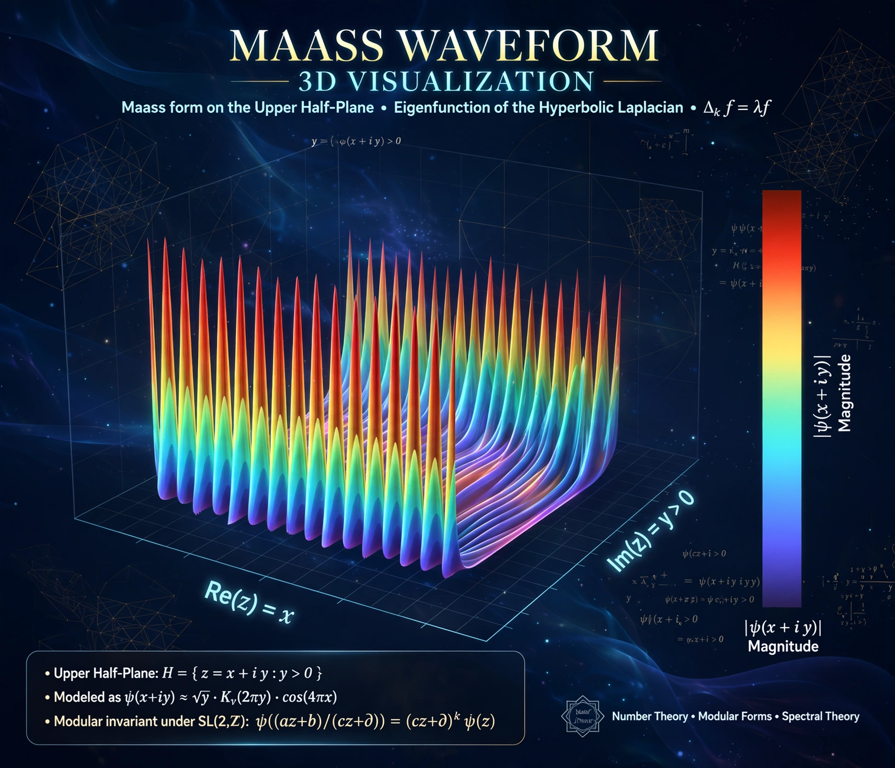

In mathematics, Maass wave forms or Maass forms are studied in the theory of automorphic forms. They are smooth functions on the upper half-plane, invariant under a discrete subgroup of SL(2,R) such as the modular group, and eigenfunctions of the hyperbolic Laplace operator, with moderate growth at cusps. They were introduced by Hans Maass in 1949.
Unlike holomorphic modular forms, Maass forms need not be holomorphic. A Maass cusp form additionally has zero constant Fourier coefficient at each cusp; its Fourier expansion involves modified Bessel functions Kit and coefficients related to L-functions. Hecke operators act on them, giving Euler products.
Maass forms are central to the Langlands program, analytic number theory, and quantum chaos — their eigenvalue statistics on arithmetic surfaces connect to conjectures of Selberg on eigenvalues (that the smallest positive eigenvalue of the Laplacian for congruence subgroups is at least 3/16, proved toward the conjectured 1/4). Selberg's trace formula relates their spectra to geometry.